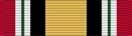

Iraq Campaign Medal
Service awardICM
For service in Iraq in support of Operation Iraqi Freedom, from March 19, 2003.
Check your eligibility and build your ribbon rackHow you get it
You earn this by meeting the requirements. No recommendation is needed. If it's missing from your record, current members can have their MPF add it. Veterans can request it from AFPC with a Standard Form 180 and supporting documents.
You qualify if any of these apply
- Assigned, attached, or mobilized to a unit operating in Iraq for 30 consecutive or 60 nonconsecutive days
- Regularly assigned aircrew flying sorties into, out of, within, or over Iraq for 30 consecutive or 60 nonconsecutive days (one day per day flown)
- Engaged in combat during an armed engagement in Iraq, regardless of time there
- Wounded or injured requiring medical evacuation from Iraq while on official duties
Quick facts
- Category
- Campaign and service
- Type
- Service award
- WAPS points
- 0
- Position in the AFPC listing
- 50 of 91 (listed in order of precedence)
Full AFPC fact sheet text
Background
On Nov. 29, 2004, Public Law 108-234 and Executive Order 13363 approved the Iraq Campaign Medal to recognize service members who are serving or have served in the country of Iraq and the contiguous water area out to 12 nautical miles, and all air spaces above the land area of Iraq and above the contiguous water area out to 12 nautical miles of Iraq.
Criteria
Eligibility for the ICM requires service members to have served in direct support of Operation Iraqi Freedom. The period of eligibility is on or after March 19, 2003, to a future date to be determined by the Secretary of Defense or the cessation of OIF.
Service members qualified for the Global War on Terrorism Expeditionary Medal by reasons of service between March 19, 2003 and Feb. 28, 2005, in an area for which the ICM was subsequently authorized, shall remain qualified for that medal. Upon application, any such service members may be awarded the ICM in lieu of the GWOT-E for such service. No service members shall be entitled to both medals for the same deployment, action, achievement, or period of service.
Service members must have been assigned, attached, or mobilized to units operating in the area of eligibility for 30 consecutive days or for 60 non-consecutive days or meet one of the following criteria:
-Be engaged in combat during an armed engagement, regardless of the time in the area of eligibility
-While participating in an operation or on official duties, is wounded or injured and requires medical evacuation from the area of eligibility
-While participating as a regularly assigned aircrew member flying sorties into, out of, within or over the area of eligibility in direct support of the military operations; each day of operations counts as one day of eligibility
The ICM may be awarded posthumously. Each military department will prescribe the appropriate regulations for administrative processing, awarding, and wearing of the ICM, ribbon and appurtenances.
Only one award of the ICM may be authorized for any individual. In April 2008, the DOD authorized campaign stars to recognize service members for participating in the following campaigns:
-Liberation of Iraq: March 19, 2003 – May 1, 2003
-Transition of Iraq: May 2, 2003 – June 28, 2004
-Iraqi Governance: June 29, 2004 – Dec. 15, 2005
-National Resolution: Dec. 16, 2005 – Jan. 9, 2007
-Iraqi Surge: Jan. 10, 2007 – Dec. 31, 2008
-*Iraqi Sovereignty: Jan. 1, 2009 – Aug. 31, 2010
-**New Dawn: Sept. 1, 2010 – Dec. 31, 2011
Note: * Single asterisk identifies a new closure date of inclusive period; ** Double asterisk identifies new campaign periods.
Authorized devices
A bronze or silver service star will be worn for approved campaigns. One bronze campaign star shall be worn for each campaign served. A silver campaign star will be worn instead of five bronze stars.
Source: Iraq Campaign Medal fact sheet, Air Force's Personnel Center